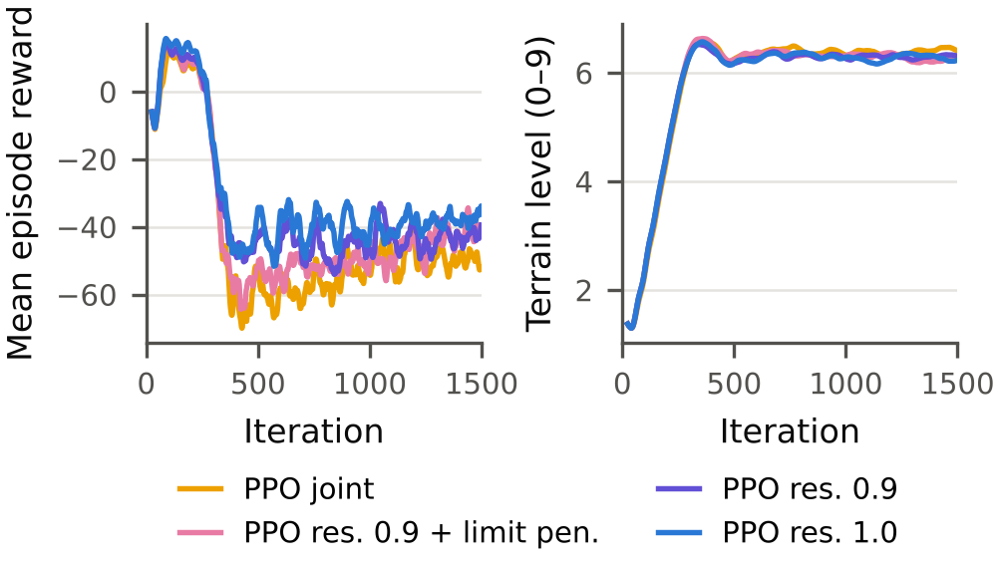
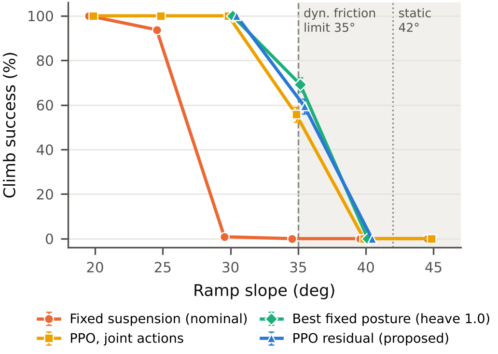
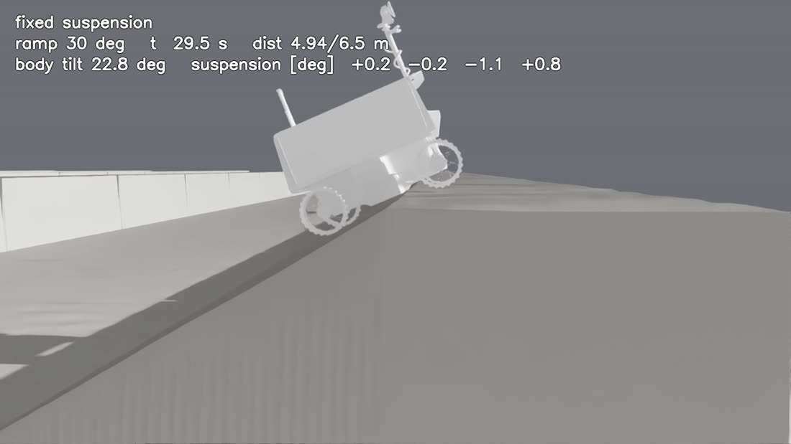
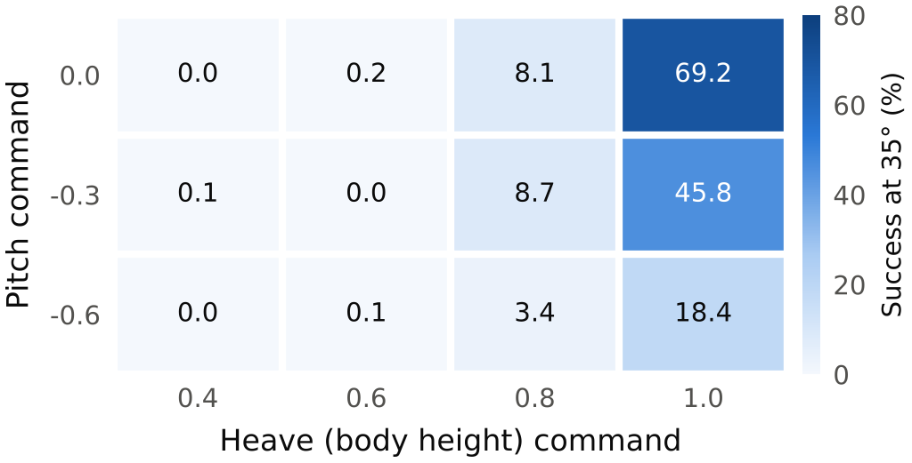
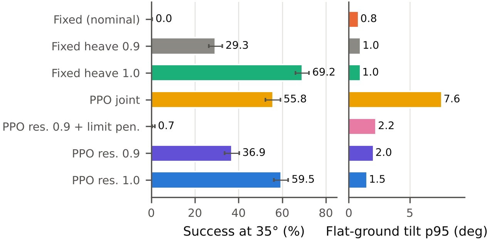
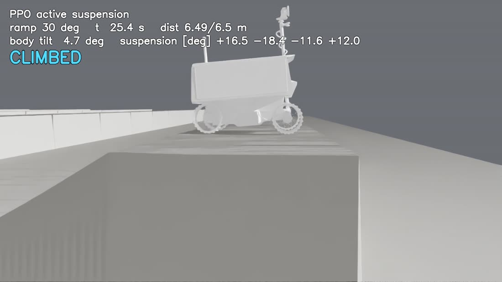

한 줄 요약 — 서스펜션을 고정한 VIPER는 30° 경사 정상에서 배가 걸려 멈췄습니다. PPO로 서스펜션 4축을 제어하자 30°를 100 % 넘었고, 35°에서는 “차체를 끝까지 들어 올리는 것”이 성패를 갈랐습니다.
현대자동차 산학프로젝트 L-Project 달 로버 12축 HILS 시스템의 하위 연구입니다. 같은 과제에서 현대 로버 모델로 먼저 진행된 PPO 능동 서스펜션 연구를, NASA VIPER 로버 모델로 처음부터 다시 만들어 학습·검증하고 있습니다. 아래 숫자는 모두 시뮬레이터(Isaac Sim + Isaac Lab) 안에서 잰 값이고, 정책 학습은 시드 하나 기준입니다(추가 시드 진행 중).
먼저 용어 정리
달 표면에는 충돌구 벽, 언덕처럼 가파른 경사가 많습니다. 로버가 경사를 못 오르는 이유는 크게 두 가지입니다. 바퀴가 미끄러지거나(마찰 한계), 차체가 지형에 걸리거나(기하 한계). 서스펜션 높이와 자세를 상황에 맞게 바꾸면 두 번째 문제를 줄일 수 있는데, 어떤 자세가 언제 좋은지는 사람이 규칙으로 정하기 어렵습니다. 그래서 강화학습(PPO)이 직접 찾게 했습니다.
공개된 VIPER 3D 모델을 STL → USD로 바꾼 상태에서는 서스펜션이 움직이지 않고, 질량도 거의 들어가 있지 않았습니다. 학습을 시작하기 전에 고친 것들입니다.
| 제원 (측정값) | 값 |
|---|---|
| 바퀴 반경 | 0.305 m |
| 휠베이스 / 트랙 | 1.536 m / 1.217 m |
| 기본 자세 배 밑 여유 | 0.135 m |
| 서스펜션 구동 범위 | ±20° (위팔 조인트) |
| 중력 | 1.62 m/s² (달) |
현대 로버 연구의 학습 코드를 VIPER에 맞게 옮겼습니다(관절 이름, 바퀴 위치, 서스펜션 부호 등). 학교 서버가 아니라 개인 노트북 한 대(RTX 4060 Laptop, VRAM 8 GB)에서 학습과 평가를 모두 돌렸습니다.
| 항목 | 설정 |
|---|---|
| 시뮬레이터 | Isaac Sim 5.0 + Isaac Lab, rsl_rl PPO |
| 병렬 환경 / 학습 횟수 | 1,024개 / 1,500 iteration (약 2시간) |
| 지형 | 경사로 15~45° 커리큘럼(10단계) + 평지 타일 20 % |
| 도메인 랜덤화 | 바퀴 정마찰 0.75~1.0, 동마찰 0.55~0.80, 차체 질량 |
| 정책 입력 / 출력 | actor 34개 관측(로버가 실제로 알 수 있는 값), critic 45개(시뮬레이터만 아는 값 포함) / 서스펜션 4 + 바퀴 4 |
| 평가 | 경사를 한 각도로 고정, 경사 에피소드 832개 + 평지 192개, 마찰은 기준값(정 0.90, 동 0.70) |


25°와 30° 사이에서 성공률이 93.8 %에서 0.8 %로 떨어지는 건, 조금씩 나빠지는 게 아니라 어떤 문턱을 넘었다는 뜻입니다. 영상을 보면 그 문턱이 무엇인지 보입니다.

경사에서 평지로 꺾이는 정상 모서리를 지날 때, 앞바퀴와 뒷바퀴 사이의 차체 아랫면이 모서리에 닿습니다. 경사가 가파를수록 꺾이는 각도가 커져서 같은 배 밑 여유(0.135 m)로는 더 쉽게 걸립니다. 바퀴는 계속 돌지만 차체 무게가 모서리에 실려 바퀴가 땅을 제대로 누르지 못합니다. 미끄러져서가 아니라 기하적으로 걸려서 실패하는 겁니다.
PPO 영상에서는 정상 근처에서 서스펜션 각도가 크게 바뀌면서 차체가 올라가는 게 보입니다. 정책이 따로 가르쳐 주지 않았는데도 “정상에서는 배를 든다”를 스스로 찾아낸 셈입니다.
경사면에서 바퀴가 미끄러지지 않으려면 경사각의 탄젠트가 마찰계수보다 작아야 합니다(tan θ ≤ μ). 평가에 쓴 마찰로 계산하면:
그래서 40°, 45°에서는 모든 제어기가 0 %입니다. 서스펜션으로 자세를 바꿔도 바퀴와 땅 사이의 마찰은 늘릴 수 없습니다. 이 결과는 오히려 시뮬레이터가 물리적으로 말이 되게 동작한다는 확인이기도 합니다. 그리고 35°는 정확히 동마찰 한계에 걸친 각도라서, 가장 흥미로운 비교가 일어나는 곳이 됐습니다.
35°에서 PPO는 55.8 %였습니다. 그럼 서스펜션을 그냥 특정 자세로 고정하면 어떨까 싶어서, heave(높이)와 pitch(앞뒤 기울기) 조합 12개를 고정한 채로 35°를 평가했습니다.

결과는 단순했습니다. 차체를 최대한 높게 들면 69.2 %로, PPO(55.8 %)보다 높았습니다. 앞을 숙이는 pitch는 경사 위에서 차체를 수평에 가깝게 해 주지만, 정상 모서리를 지날 때 앞쪽 배 밑 여유를 줄여서 오히려 손해였습니다. 35°에서 승부를 가르는 건 “자세를 섬세하게 바꾸기”가 아니라 “배 밑 여유를 최대로 확보하기”였던 겁니다.
보상 함수에는 서스펜션 각도가 0.32 rad(약 18°)를 넘으면 벌점을 주는 항목(w_sus_limit)이 있었습니다. 관절 한계(±20°)에 부딪히지 말라는 안전장치였는데, 이 과제에서는 그게 바로 정답 근처였습니다. 최대 높이 자세는 0.35 rad라서, 정책이 차체를 끝까지 들 때마다 벌점을 받고 있었던 겁니다.
이 가설을 확인하려고 세 단계로 실험했습니다. 모두 “기본 자세(높이) + 정책이 더하는 residual” 구조입니다.

| 35° 기준 | 성공률 | 평지 기울기 p95 |
|---|---|---|
| 고정 서스펜션 (기본 자세) | 0.0 % | 0.9° |
| 고정 높이 0.9 | 29.3 % | 1.0° |
| 고정 높이 1.0 (격자 탐색 최적) | 69.2 % | 0.9° |
| PPO 관절 직접 제어 | 55.8 % | 7.6° |
| PPO residual 0.9 + 벌점 | 0.7 % | 2.3° |
| PPO residual 0.9 | 36.9 % | 2.0° |
| PPO residual 1.0 | 59.5 % | 1.5° |
평가 에피소드가 832개라 성공률의 오차는 ±3 %p 정도입니다. 그래서 59.5 %와 69.2 %의 차이는 우연으로 보기 어렵습니다. 다만 69.2 %짜리 자세는 35°라는 시험 각도를 알고 12개 중에서 고른 것이고, PPO는 15~45° 전체와 랜덤한 마찰에서 평균적으로 잘하도록 학습된 정책이라는 차이가 있습니다.

영상을 다시 보다가 발견한 문제입니다. 서스펜션 각도를 오른쪽 바퀴 부호까지 맞춰서 보면 앞쪽 두 개는 약 +17°, 뒤쪽 두 개는 약 −12°로, 앞뒤가 반대인 pitch 자세입니다. 경사 위에서는 쓸모 있는 자세인데 평지에 올라와서도 그대로 유지하고 있었습니다. 평지만 달리는 평가에서도 이 정책은 차체가 7.6°(p95)까지 기울었습니다(고정 서스펜션은 0.9°).
원인은 두 가지로 봅니다. 첫째, 정상 너머 6.5 m에 닿는 순간 에피소드가 끝나서 정상 이후 평지에서 다시 수평을 맞추는 동작을 배울 기회가 없었습니다. 둘째, 관절 각도를 직접 내는 구조에서는 “같은 자세로 버티기”가 쉬운 지역 최적해였습니다. Residual 구조(높이 1.0 기본 자세에서 출발)로 바꾸자 평지 기울기는 1.5°로 줄었습니다.
제일 크게 남은 건 “강화학습이 이겼다”보다 “왜 이기고 왜 졌는지”가 더 중요하다는 감각입니다. PPO가 고정 서스펜션을 이긴 이유는 배 걸림이었고, 최적 고정 자세에 진 이유는 내가 넣은 벌점이었습니다. 숫자 하나가 이상할 때마다 영상을 다시 보고, 자세를 하나씩 고정해서 재 보고, 가설을 세워 한 가지만 바꿔 다시 학습하는 과정을 거치면서, 결과가 나쁠 때가 오히려 가장 많이 배우는 때라는 걸 알게 됐습니다.
수치는 모두 Isaac Sim 5.0 + Isaac Lab 시뮬레이터 내부 계측값이며, 정책 학습은 시드 1개 기준입니다. 실물 로버·토양 시험 결과가 아닙니다. 마지막 업데이트 2026.11.12.